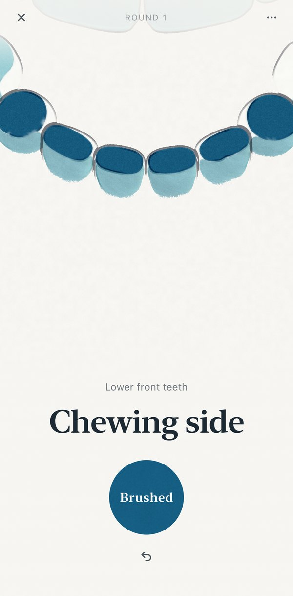
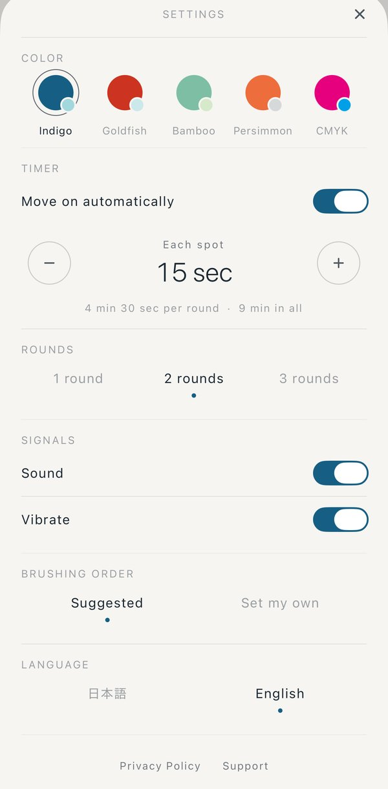
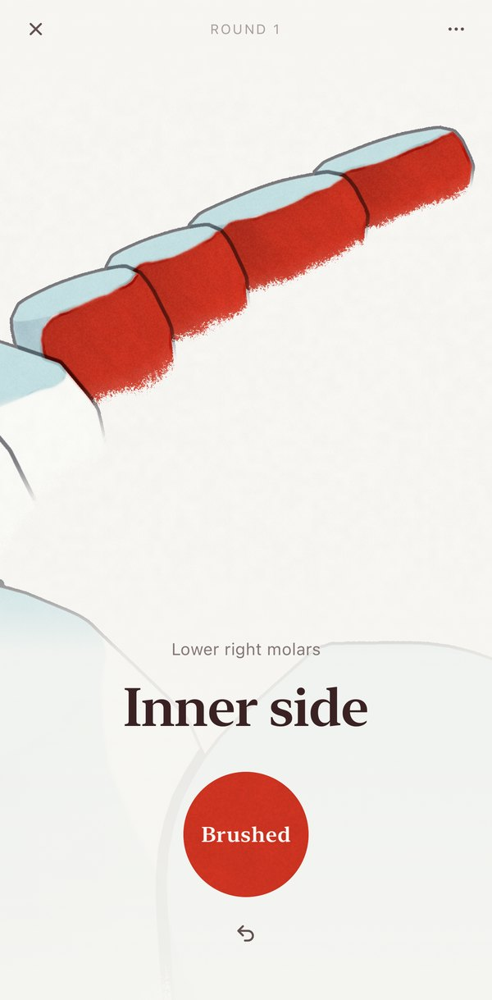
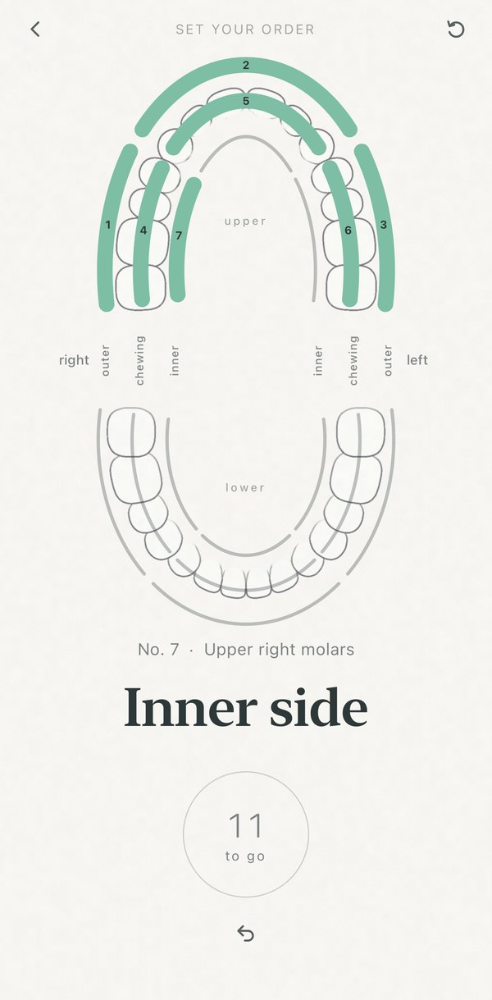
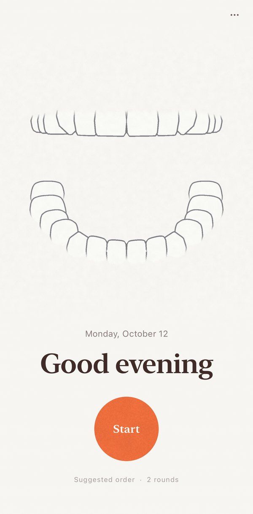
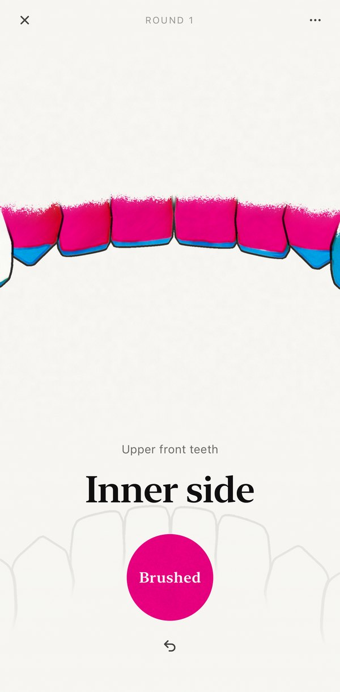

Never forget
where you've brushed.
Let your mind wander while you brush your teeth.
BrushMark keeps your place, moves you on one spot at a time, and ends the do-overs.

Brushed spots
get colored in.
See where you've been at a glance. Even with your mind elsewhere, no more brushing the same spot twice.

One spot at a time,
then on to the next.
Your teeth are split into 18 spots, shown one at a time. Choose 5 to 60 seconds per spot, and 1 to 3 rounds.

No need to
watch the screen.
A sound and a buzz tell you when to move on.

Set your own order,
if you like.
Use the suggested order and just start, or set your own. You can set it again at any time.

Simple to use.
Open, brush, done.

Five colors
to choose from.
Indigo, Goldfish, Bamboo, Persimmon and CMYK.
About the App
- Requires
- iPhone with iOS 17 or later
- Languages
- English, Japanese
- Price
- Free
- Reminders
- A reminder around the times you usually start brushing (if you allow notifications).